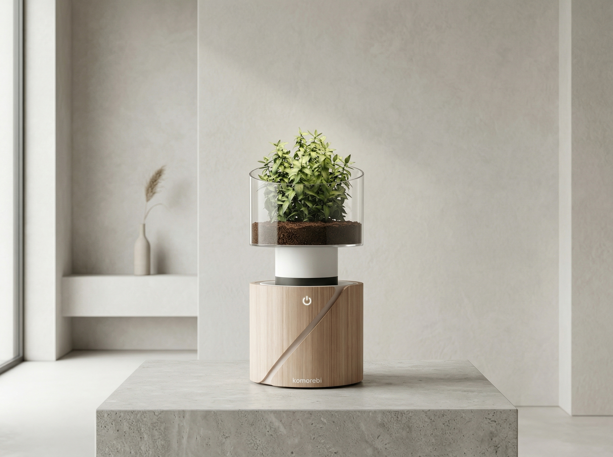
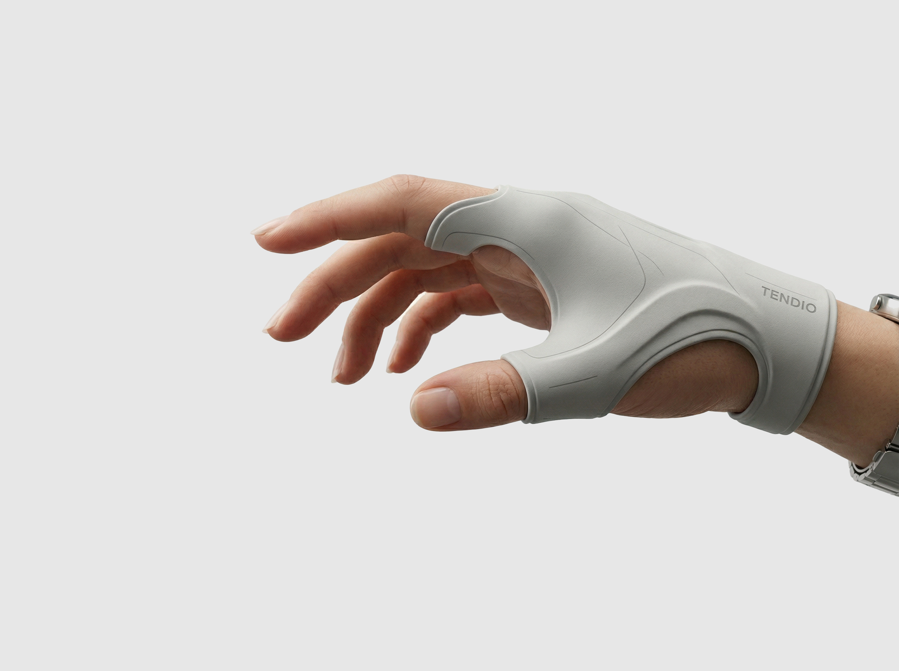
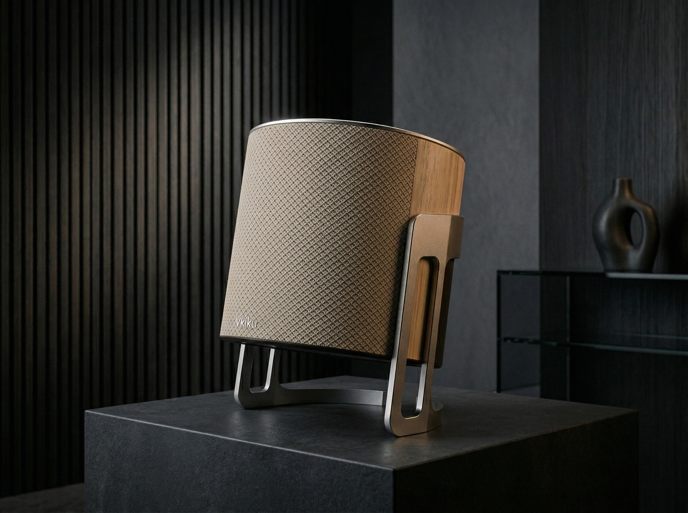
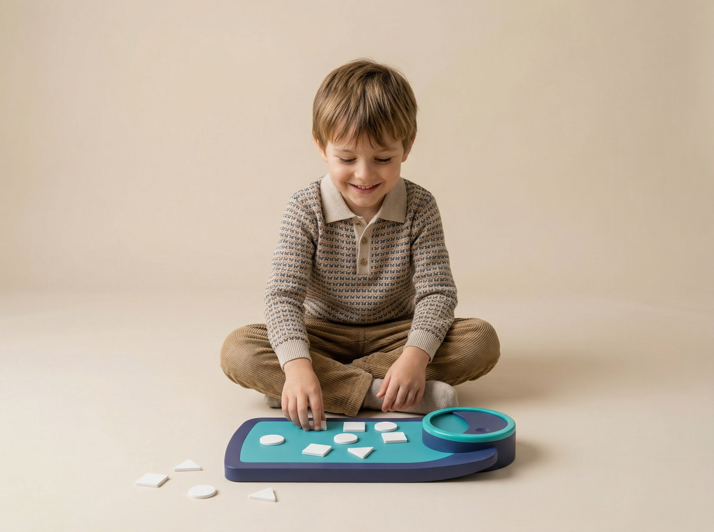
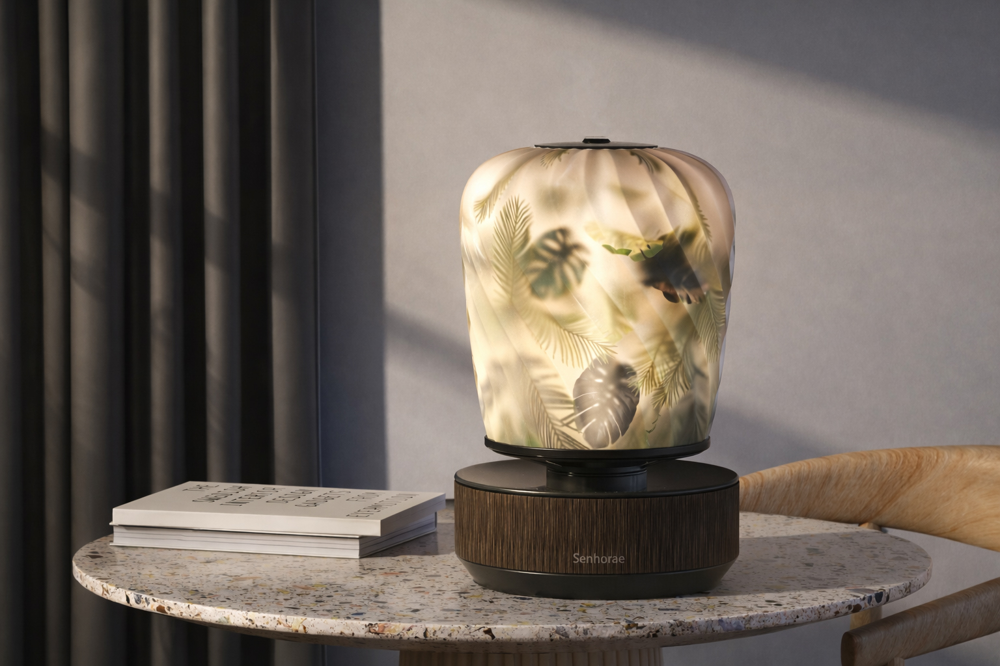

01
Komorebi
Product study, metadata to be added.
产品设计项目，详细信息后续补充。
Industrial Designer
A bilingual personal space for objects, systems, and quiet industrial design studies.
一个用于呈现身份、作品与工业设计思考的中英双语个人空间。
I am Guo Ziyang, also working under the name Erayan. I was born in Dalian, Liaoning, China, on December 1, 2002. My work sits around industrial design, product form, interaction between people and objects, and the atmosphere a designed object brings into daily space.
I studied Industrial Design at Xi'an Jiaotong-Liverpool University for my undergraduate degree, and I am currently continuing in Industrial Design at Parsons School of Design.
我是郭梓扬，也使用英文名 Erayan。我出生于 2002 年 12 月 1 日，来自中国辽宁大连。 我的创作围绕工业设计、产品形态、人与物之间的互动，以及设计物件进入日常空间时形成的气质。
本科就读于西交利物浦大学工业设计专业，目前在帕森斯设计学院继续攻读工业设计研究生。
Details will be added after the first visual direction is approved.
当前先确认视觉方向，作品年份、材料、工具和说明后续补充。

Product study, metadata to be added.
产品设计项目，详细信息后续补充。

Wearable design study, metadata to be added.
可穿戴设计项目，详细信息后续补充。

Object and atmosphere study, metadata to be added.
物件与空间氛围项目，详细信息后续补充。

Children's product study, metadata to be added.
儿童产品设计项目，详细信息后续补充。

Lighting object study, metadata to be added.
灯具产品设计项目，详细信息后续补充。
Mobility design study, metadata to be added.
移动载具设计项目，详细信息后续补充。
This first preview keeps the ending quiet and simple. Email, social links, or a PDF portfolio can be added when you decide what should be public.
第一版预览先保留简洁结尾。邮箱、社交链接或 PDF 作品集入口，可以在你确认公开内容后加入。